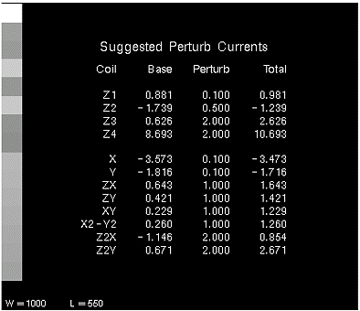

LVShim Calibration File Generation Details
LVshim calibration files contain coil characterization data used by the LVshim analysis tool to calculate the new currents needed to correct for magnetic field inhomogeneity. Generic shim calibration files are supplied with the system software for all gradient coils and for GE S/C shim coils. Shim calibration files must be created at the site for Oxford and GE resistive shim coils. The generic gradient and S/C shim calibration files should work well at all sites, so it should not be necessary to create them. Creating a S/C shim calibration file is time-consuming and prone to errors. The procedures for creating a gradient or S/C shim calibration file on-site have not been supplied. Before creating a gradient or S/C shim calibration file at a site, contact your MAC Team Leader, or the OLC Magnet Support Group for assistance.
If the resistive shim coil assembly is replaced, or is moved within the magnet bore, then a new cal file may need to be created. Also, changes to system software may require the creation of a new cal file
1 Creating a Shim Calibration File
Creating a resistive shim calibration file can take two to four hours, and can be error-prone. Be sure there is adequate time to perform the task, and be careful during coil characterization to enter the correct perturbation currents.
The procedure in this section describes the creation of a 45-cm DSV Oxford Resistive Shim calibration file. The process of creating a GE Resistive Shim calibration file is similar. If you cannot collect image data to build a 45-cm DSV calibration file (due to phase wrap issues), then build a 32-cm DSV calibration file instead. Shim the magnet using the 32-cm DSV calibration file, but check the shim on a 45-cm DSV. You should be able to meet the 45-cm DSV shim specifications with the 32-cm DSV calibration file. If you cannot meet the 45-cm DSV shim specification, contact your local Zone Engineer or Support Center - Magnet Support Team for assistance.
A shim calibration file can be created in either of two ways:
-
Collect coil characterization scan data for all the coils in a coil set, then run the shim calibration processing on all the data to create the calibration matrix.
-
Collect coil characterization scan data for one coil in a coil set, then run the shim calibration processing on the data for that coil. This process is repeated until all the coils in the set have been characterized; then the calibration matrix is created.
2 Three Generation Options
There are three generation options: Create, Resume, and Modify. Table 1 shows all options.
3 Suggested Perturb Currents and Series Descriptions
Perturbation Current
The Perturbation Current is the amount that the coil was perturbed during the collection of the selected image data set. If the perturbation value is set to 0 (zero), the selected image data set is treated as the baseline scan for the named coil.
This section contains the suggested perturb currents and series descriptions to be used during shim calibration file generation. The information in Table 2 to 9-coil gradient/resistive magnets. Table 3 applies to 12-coil resistive magnets.
4 Enter Baseline Currents
Before starting data collection, enter the baseline currents for the coil set into the system. These are the final mechanical shim currents, or the currents used to get the best shim to date.
-
At the operator workspace, select the tools icon in the desktop control panel.
-
To run the LVShim tool from the Service Browser, follow the instructions on Figure 1, below:
Figure 1. STARTING THE LVSHIM TOOL FROM THE SERVICE BROWSER

For TwinSpeed, highlight the GradMode, then click on OK. Continue as shown in Table 4.
5 Get Hard Copy of Perturbation Currents (Optional)
If a printer is available, and you wish to get a hard copy of the perturbation currents:
6 Data Collection
6.1 Control Gradient Shim Coil Currents
Option availability I is available only when the Cal File Type is "Gradient."
When this option is set to yes, the gradient shim coil perturb currents are automatically set by the software. When the option is set to no, the gradient shim coil perturb currents must be manually set.
To manually set the gradient shim coil currents:
-
At the operator workspace, select Manual Prescan.
-
Set x, y, and z to the desired values, then select Files, then Save Shim File. Select Done to save the file.
-
Select Done to exit Manual Prescan.
6.2 Suggested Perturb Current
Option availability II is available only when the Cal File Type is not "Gradient."
When this option is set to yes, the suggested perturb currents for the coil set being calibrated are displayed, allowing you to get a hard copy of the currents. This option allows you to change the perturb currents to be used for the coil set being calibrated. When selected, the software prompts for the new currents, one at a time. Illustration 5-2A shows a typical suggested perturb currents display (shown in Genesis format; the Lx display is different).
Figure 2. SUGGESTED PERTURB CURRENTS (OXFORD RESISTIVE SHIM COIL)

6.3 Storage
There are two types of storage: Accumulate and Replace. Accumulate is used when you wish to average multiple scans for a given coil type/perturbation (such as taking three Z1 baseline scans to average the data). Replace is used when you wish to throw out the old data and replace them with data from a different scan. If you choose Replace mode, all previous data collected for the coil are lost.
6.4 Data Collection
-
Perform a Phantom Setup, if you haven’t already done so.
-
At the operator workspace, select the Scan icon in the desktop control panel and set up LVshim scan as follows:
-
In RX Manager, click New Series.
-
At the operator workspace, prepare the system for LVshim scanusing the "Service Protocols" procedure located on the service methods CD-ROM, or, for the alternate proprietary procedure, see below.
-
In Additional Parameters, click User CVs Screen.
-
In the User Control Variables window enter the following:
-
No. of Scan Planes: 6
-
Bandwidth: 2000
-
-
Click Accept and then Save Series.
-
In RX Manager, click Prepare to Scan.
-
-
Click Manual Prescan. While in the Center Freq Coarse (CFC) mode, verify the frequency peak is centered in the display. Adjust the center frequency peak as necessary. After locating the best signal, open the [Frequency] menu at the top of Manual Prescan window and select Save Frequency to save the new center frequency.
-
Click Scan TR (R1/R2). Verify that R1 and R2 are not over ranged. Adjust R1 and R2 for approximately 50%.
-
Click Done to exit manual prescan.
-
Click Scan.
note:A Resistive Shim Calibration file can be created by using one baseline scan and one perturbation scan for each coil in a coil set. However, if time allows, three scans should be taken for each baseline and perturbation to insure accuracy of the calibration matrix (by averaging the data).
-
If more than one scan is desired, when the first scan is finished, press Scan again to collect a second set of scan data. Then, when the second scan is finished, press Scan again to collect a third set of scan data.
-
When the baseline scan(s) is finished, in RX Manager, copy and paste the present series, then select View Edit. Change the Series Description to Z1 0.1, then click Save Series, followed by Prepare to Scan. Perturb the Z1 coil baseline current by 0.1 amps as described in Suggested Perturb Currents and Series Descriptions, then repeat steps 3 through 8 to collect the Z1 perturbation scan(s). After the Z1 perturbation scan(s) have been collected, set the Z1 coil current back to its baseline value.
-
To collect scan data for all of the coils in a coil set before processing, follow these steps:
-
In RX Manager, copy and paste the present series, then select View Edit.
-
Change the Series Description to Z2 baseline, then click Save Series, followed by Prepare to Scan.
-
Perform steps 3 through 9 to collect baseline and perturbation scans for the Z2 coil (use Z2 0.5 as the Series Description name for the Z2 perturbation scans).
-
Repeat steps a through c for the remaining coils in the coil set.
-
When scan data for all coils have been collected, perform Shim Calibration Processing (Silent Mode = Yes).
-
-
To collect and process scan data for each coil, one at a time
-
Perform Shim Calibration Processing on the Z1 coil scans (baseline and perturbation) (Silent Mode = No).
-
When the processing is done, in RX Manager, copy and paste the present series, then select View Edit. Change the Series Description to Z2 baseline, then click Save Series, followed by Prepare to Scan.
-
Perform steps 3 through 9 to collect baseline and perturbation scans for the Z2 coil.
-
Repeat steps a through c for the remaining coils in the coil set.
-
6.5 Existing Current in Each Coil
Existing current values are displayed for all the coils in the coil set being shimmed. This option allows you to change the existing values. When the gradient current values are changed, the new values are automatically sent to the gradient amplifiers by the software.
6.6 Shim Calibration Processing
-
In the Service Browser, select the Calibration tab, then in the menu options on the left side of the browser, click LVShim. On the right side, click the link Click here to start this tool. See Figure 1.
-
For TwinSpeed, highlight the GradMode and click on OK. Continue as shown in Table 6.
Signa 1.0T Mobiles may have a Z2 Resistive Shim Coil installed on the Passive Shim Drum. Make sure that the Z2 Resistive Shim Power Supply (mounted on the operator workspace table) is powered off when performing this procedure.
7 Sampling Diameter in Centimeters
The sampling diameter is the size of the diameter spherical volume (DSV) to be used during processing. Only data within this specified volume are processed. This value is editable during creation of the shim calibration file, but is fixed during normal shimming.
8 Details of Characterizing Shimming Coils
This section provides detailed information about the items in the Characterizing Shimming Coils menu. When selected, some of the items toggle to another value (available choices are shown in parentheses), some toggle between Yes and No, and some prompt for additional input.
8.1 Coil Characterization Status
The coil characterization status is located in the area under the menu title line. It consists of the following information for each of the coils in the coil set:
-
Coil name
-
Number of Baseline scans for the coil (designated with a B)
-
Number of Perturbation scans for the coil (designated with a C)
The following is an example of the coil characterization status for a typical coil (with three baseline scans and three perturbation scans):
AX_1: ( B 3, C 3 )
The coil characterization status area also shows whether a common baseline has been processed for the coil set. A common baseline is a baseline scan used during characterization of all the coils in a coil set. A common baseline is not necessary if a new baseline scan is performed before each coil perturbation.
8.2 Coil Name
This is the name of the coil to be characterized by the selected image data set. If the selected image data set is being used as the baseline scan for all the coils, use the name common baseline.